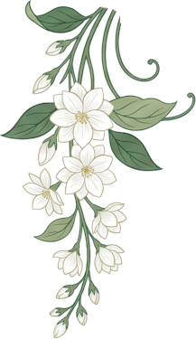
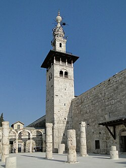
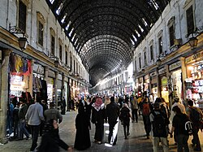
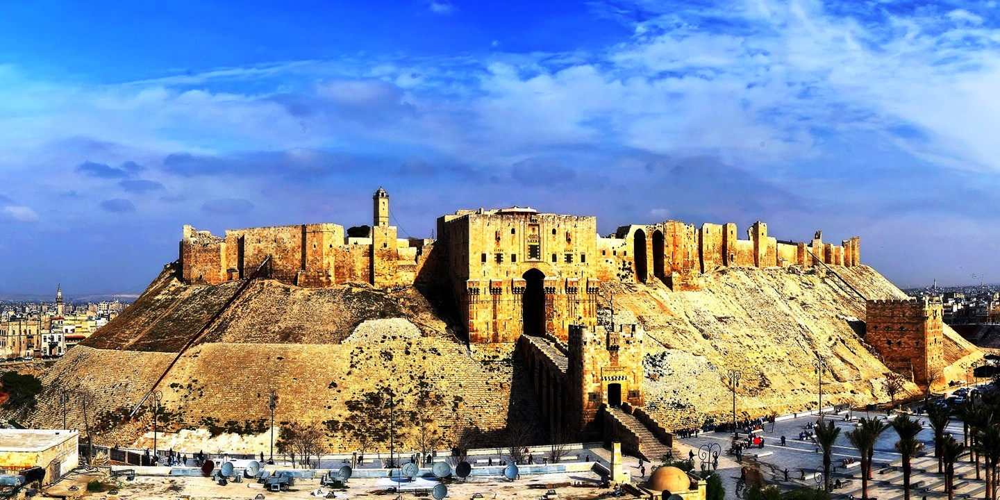
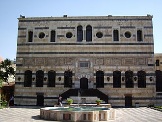
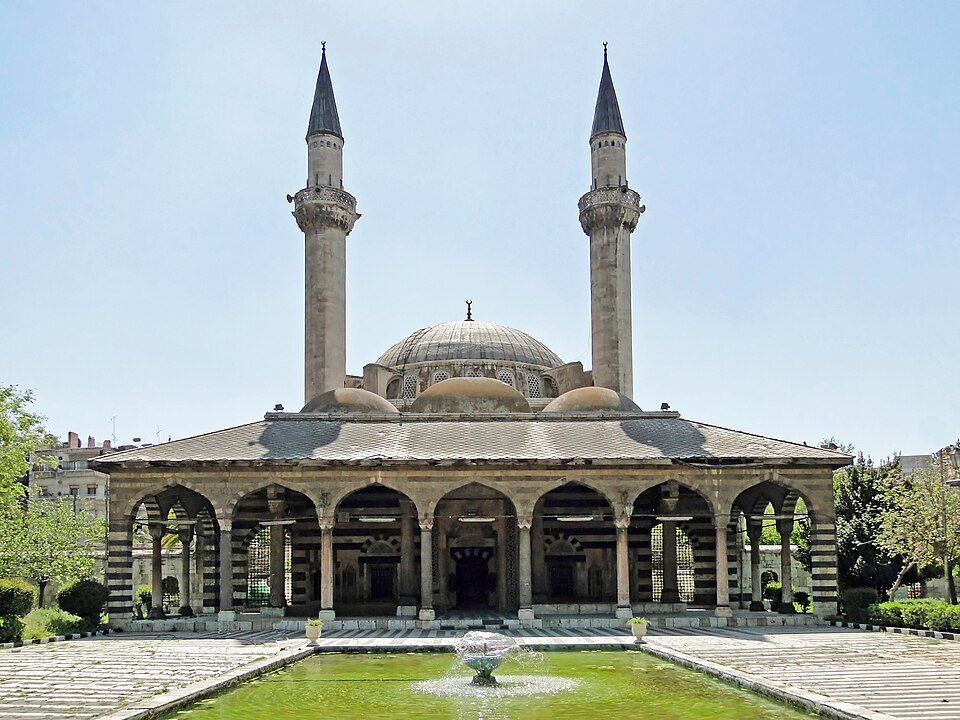
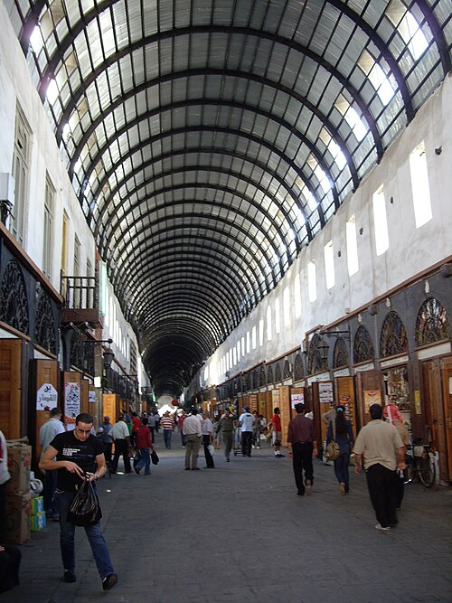
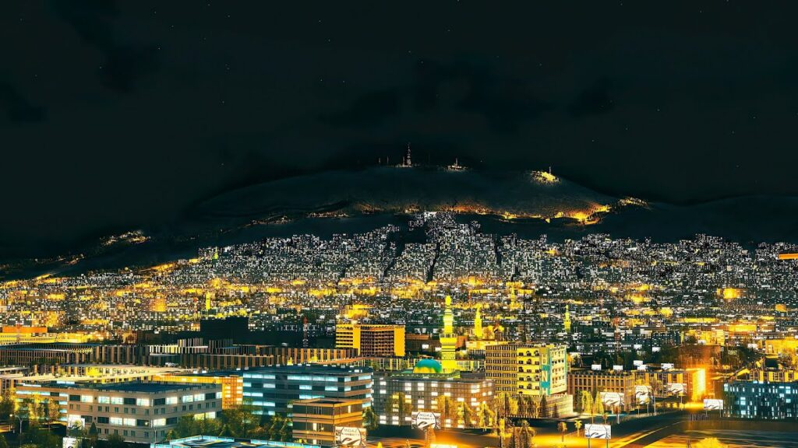
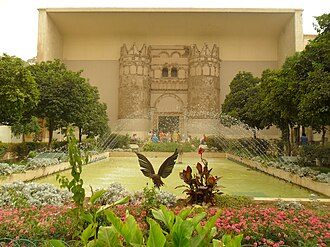

UMAYYAD MOSQUE
Historic Site
located in the old city of Damascus, is one of the largest and oldest mosques in the world.

Discover the timeless beauty, history, and vibrant culture of our ancient city.

Historic Site
located in the old city of Damascus, is one of the largest and oldest mosques in the world.

Markets & Cafes
The Al-Hamidiyeh Souq is the largest and the central souk in Syria, located inside the old walled city of Damascus next to the Citadel.

Historic Site
The Citadel of Damascus is a large medieval fortified palace and citadel in Damascus, Syria. It is part of the Ancient City of Damascus, which was listed as a UNESCO World Heritage Site in 1979.

Museum
Al-Azm Palace is a palace in Damascus, Syria, built in 1749. Located north of Al-Buzuriyah Souq in the Ancient City of Damascus.

Historic Site
The Sulaymaniyya Takiyya is a takiyya, located in Damascus, Syria, on the right bank of the Barada River. Commissioned by the Ottoman sultan Suleiman the Magnificent.

Markets & Cafes
Also called Al-Taweel Souq is a historically important souq which forms the western fraction of the Street Called Straight in Damascus.

PARK & GARDENS
Mount Qasioun is a mountain overlooking the city of Damascus, Syria. It has a range of restaurants, from which the whole city can be viewed.

Museum
The National Museum of Damascus is a museum in the heart of Damascus, Syria. As the country's national museum as well as its largest.